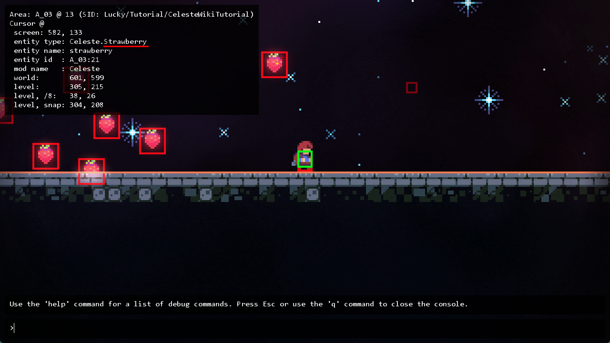
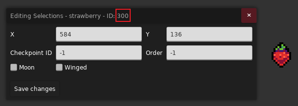
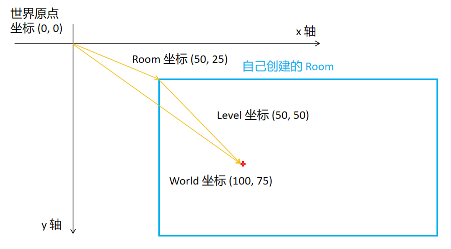
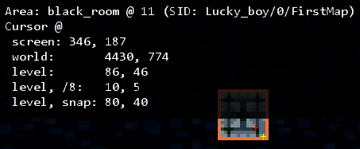

常见问题
b站 Wiki 常见问题解决方案
Everest Wiki 常见问题解决方案
常见 Helper 问题 by 底龙
Discord 问答区
你能问出的问题别人大概率也问过了, 可以在问答区和和全局搜索区(右上角)试着搜搜看
为什么不能切板
请放重生点: 请好好阅读其他教程先(
xxx 出问题了, 没反应, 没效果
内容填对了吗?
保存了吗(Save Changes了吗, Loenn 保存了吗, Ctrl + S 了吗)?
路径对了吗(斜杠有敲反吗, 文件名对吗, 要加后缀吗)?
xml 内容对了吗(id 冲突, 模板错误, 是否多加或者少加了一个 /)?
Mod 启用了吗?
游戏重启了吗?
忘了自己把地图文件保存在哪儿了
重开一次 Loenn, 右下角应该会显示 "Loaded map: xxxx.bin", 或者你下个 Everthing
怎么修改查看对象属性
Loenn 里右键对象
怎么置顶右侧 placement 条目, 方便查找
双击置顶, 双击取消置顶
如何找到 xxx 官图实体的 plus 版
理论上你直接输入这个实体的名字就会跳出来了(所以这个 QA 好像不是很有必要写, 但真的会有人会找不到😂, 或者可能缺 helper), 一般名字会在原来的基础上加上 Custom, Grouped, Connected 之类的前缀, 最稳的方法是直接在所有Helper及其对应实体里搜关键词即可
xxx 这个实体叫什么
推荐的方式
- 搭配对照表, 用你聪明的大脑猜猜看这个实体可能叫什么
- 拆包(即打开对应地图文件查看)
- 下载 CelesteTAS Mod, 运行有这个实体的图, 然后按
~打开控制台点击相应实体的碰撞箱查看信息, 类似于这样 - 搜聊天记录
不推荐的方式
- 频繁问群友
经典永流传
- 灰砖：Crumble Block
- 一碰就碎的砖块：Crumble Block On Touch
xxx 效果怎么实现
- 搜搜聊天记录
- 想想有没有见过有类似效果的图, 拆包看看人家怎么做的
- 尝试在 Loenn 里搜索关键词:
- 比如你想改圆刺颜色, 给圆刺换贴图啥的, 那你肯定搜 spinner 吧, 然后发现有 Custom Spinner 这个 Entity
- 比如你想改电网颜色, 那你肯定搜 lightning 或者 color 吧, 然后发现有 Lightning Color 这个 Trigger
- 比如你想加个光照, 那肯定搜 glow, bloom, light 什么的吧
- 如果自己解决不了再问群友(不过偶尔随便问问是没问题的)
xxx Entity/Trigger 怎么用
- 搜搜聊天记录
- 凭直觉试试, 到游戏里看看变化
- 鼠标移到属性上可能会显示详细的描述(俗称注释)
- 到香蕉网上搜对应的 helper, 运气好的话, 它的界面上会提供 wiki 链接, 里面会有更加详细的描述(所有Helper及其对应实体{:target="_ blank"})
- 如果你会 code, 有时直接看源码也不失为一种好办法(不是
- 还不行就请教群友
如何把不同 tile 分层
- 一种方法是用 viv helper 的 custom depth tile entity
- 另一种方法是改 ForegroundTiles.xml 给 tile 加 ignore
怎么做对准
按住 ctrl 就能1px 1px地移动对象了
怎么游戏里更新不了 Mod 了
先关闭 Loenn, 因为它占用了 Mod 文件, 所以你会发现开着的时候想删 Mod 都删不了
为什么我的刺吸在另一个红绿灯上了
请先阅读更新顺序, 所以你想让刺吸在另一个红绿灯上就把那个红绿灯删了重放即可, 对了, 想在 Loenn 里判断深度直接看谁的图层在下面即可, 这里就是在下面的红绿灯先加载, 先占刺
怎么将两个物体绑定在一起
用 Eevee Helper 的 Attached Container
我的镜头怎么不受控制了, 看望远镜怎么死了
可参考镜头垂直锁定, 大概率是因为你的场景内 有badeline 球, 把它的 Lock Camera 属性取消即可
这个实体上的属性让我填的路径填什么
把鼠标移到属性上可能会显示详细的描述, 上面可能直接告诉你根路径在哪儿了(一般相对与 gameplay 或者原贴图所在文件夹)
如果没告诉你, 那看看这个栏目有无默认值, 有默认值就可以参照素材在原官图素材中的位置很方便的推导出这个路径是相对什么文件夹的
如果还没有, 那么可以在对应 Helper 的 香蕉网 / Github 上查看有无相应文档(在所有实体列表上搜索更方便)
如果都没有, 要么就是作者觉得填的东西非常符合直觉所以没加注释, 要么就是懒, 问群友还是搞不懂的话就算了吧, 不过真的有这样的实体吗
路径对的但图片加载不出来
看看斜杠是不是反了, 要用正斜杠 / 而不是反斜杠 \, 一般偷懒直接从文件资源管理器里复制过来的路径都是反斜杠
Loenn 数据
我们有时能看到群友在互相转发如下所示的东西
1 2 3 4 5 6 7 8 9 10 11 12 | |
这些其实就是 Loenn 里各种实体, 触发器, 背景的数据, 对着选中实体复制一下粘到 .txt 里你就懂了, 本质上和你打开属性面板看到的东西是一样的(比如上面这个就是 Refill 实体的属性数据),
所以你经常能看到群友在转发它们, 使得这些实体可以在大家的 loenn 里相互传播
添加隐藏数据😱
在此基础上 mapper 们甚至还整出了为其添加新的属性的骚操作(原理就是有的 Helper 的配置文件缺失了部分属性, 但是在代码中仍然有用到那个属性(如果找到了属性就用属性的值, 没找到就用默认值)), 所以如果你偷偷在数据后面加对应的属性说不定可以实现一些"隐藏功能", 至于为什么 Helper 作者把属性删了, 估计是不小心的, 也有可能是觉得对应属性没什么人用, 加了容易增加实体学习成本之类的
举例
Bounce Helper 的 Bounce Move Block 属性长这样, 你想改它贴图但是发现好像改不了
1 2 3 4 5 6 7 8 9 10 11 12 13 14 15 16 | |
在翻看源码后你会发现, 他使用到了
spritePath 这个属性, 默认值为 objects/BounceHelper/bounceMoveBlock
1 | |
所以如果我们要加贴图的话自己偷偷把属性加上就好了, 之后换贴图就跟普通的换法如出一辙了
1 2 3 4 5 6 7 8 9 10 11 12 13 14 15 16 17 | |
如何获取实体 Type 名
下载 Celeste TAS Mod, 运行有这个实体的图, 然后按 ~ 打开控制台点击相应实体的碰撞箱, 在左上角查看相应信息, 比如草莓的 Type 就是 Celeste.Strawberry, 但是大部分 Helper 支持简写,
所以一般都是写 Strawberry 就够了

如果信息刷屏了, 你可以在控制台输入 clear 来清除它们
如何获取实体 ID
属性面板上的数字就是

如何获取实体名字
属性面板上的名字就是

如何获取地图对应的 SID
SID, 即 a string ID of the area, 是一个区域的唯一标识符, 由于官图地图顺序固定, 所以可以直接通过数字找到对应的 area, 但是 Mod 图随开随关, 顺序可变, 所以我们需要 SID 来唯一标识一个地图,
即从 Maps/ 文件夹开始到地图的路径, 比如我这里是 Maps/Lucky_boy/0/FirstMap.bin, 对应 SID 为 Lucky_boy/0/FirstMap,
如果你感兴趣每个 area 具体都存了什么, 可以到 Celeste/Saves/0.celeste 存档文件中查看

如何获取各种坐标信息
当然在讲坐标之前你得先知道蔚蓝的坐标系是 x 轴朝右, y 轴朝下的, 所以 y 增大视觉上反而是在往下走, y 减小视觉上反而是在往上走, 就像这样

按下波浪键 ~ 打开控制台, 左上角的信息面板里会显示各种坐标信息

这里有五种坐标, 分别为:
- screen: 屏幕坐标, 表示当前鼠标位置(即黄色十字光标位置)离屏幕左上角的相对距离
- world: 世界坐标, 表示当前鼠标位置离世界原点坐标的相对距离(世界原点是游戏中的一个虚拟坐标概念, 游戏总需要一个原点来方便定位)
- level: 房间坐标, 表示当前鼠标位置离当前房间左上角坐标的相对距离
- level, /8: 表示 level 的值整除 8
- level, snap: 表示 level 的值整除 8 再乘 8(即红色十字光标离房间左上角的相对距离)
所以 screen, world 和 level 是比较重要的信息, 常常在各种传送, 移动函数中被使用, 而后两个只是帮你省去了运算过程
一步到位获取玩家位置(需要启用 CelesteTAS):
在游戏里双击 Ctrl 打开 TAS 信息面板, 第一行的 Pos 属性对应的就是玩家的世界坐标
注意
当然你也可以按住 `Ctrl` 再点击对应实体然后在信息面板里找到对应位置信息(会在对应位置处显示一个小蓝点), 只不过 player 的信息比较重要所以 TAS 就默认把它显示出来了
砖瓦 XML 核对清单 by 底龙
- XML 是否应用进地图(Metadata 里是否已经设置好 XML), 前景砖(ForegroundTiles.xml)后景砖(BackgroundTiles.xml)是否对应
- XML 格式是否正确, 大容器为
<Data></Data>, 小容器为<Tileset id="" path=""></Tileset>(记得下载 XML 插件, 别用你那记事本看半天纯文本了) - XML 的模板是否包含原版模板
id="z", 不包含会崩(反正我这里基本上必崩) <set mask="x0x-111-111" tiles="3,0" sprites="xxx"/>(模板主体)里面是否包含多余的 sprites, 有的话查看是否有对应的 AnimatedTiles.xml- 每个砖的
id必须不同, 一般为一个字符, 允许中文, 但是绝对不能重复 <Tileset id="" path="">中的path部分是否填写正确, 不要多了或者少了/- 同一种砖换砖材质时尽可能保持
id相同 - 有时你使用了错误的模板在 loenn 里画好砖后, 之后又使用了正确的模板, 那么得在 loenn 里重新涂一次砖